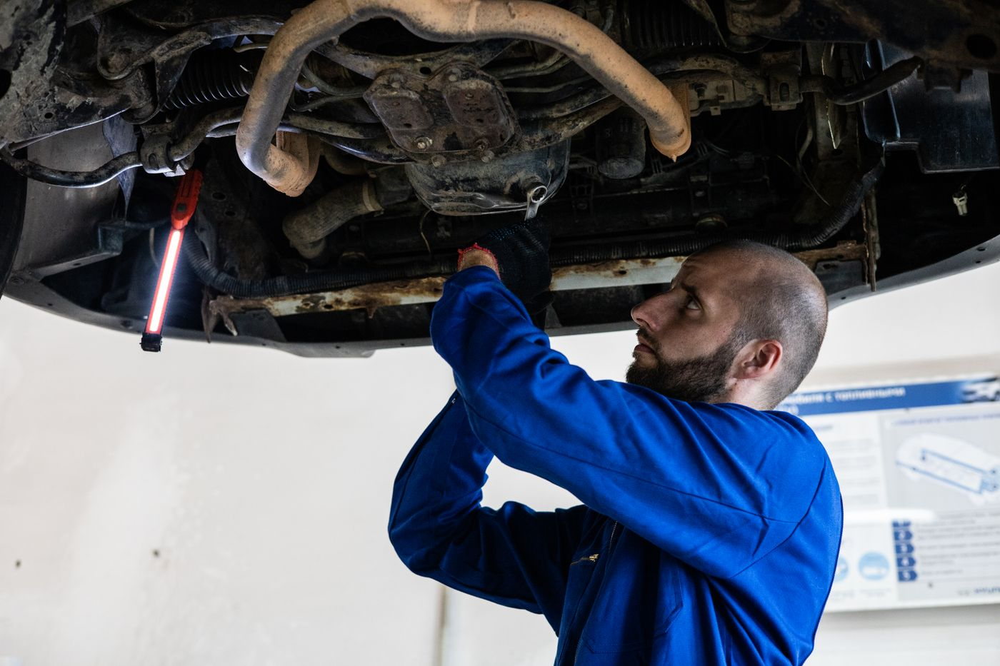

Диагностика
Компьютерная диагностика — с неё начинается большинство ремонтов.
уточняетсяпосле диагностики
Выберите модель, работу и удобное время — заявка придёт мастеру-приёмщику в Telegram, он перезвонит и подтвердит запись.

Это концепт. С вашими фото и правками будет ещё лучше
Что сервис делает — по главной странице текущего сайта.
Компьютерная диагностика — с неё начинается большинство ремонтов.
Ремонт подвески, тормозной системы, рулевого управления; развал-схождение.
Ремонт ДВС, АКПП и МКПП.
Комплекты ГРМ сервис также предлагает в разделе запчастей.
Масла — в разделе запчастей на текущем сайте.
А ещё заправка кондиционеров, выхлопная система, тюнинг и доп. оборудование.
Список работ и цены «от» — с главной страницы текущего сайта (блоки «Качественный ремонт» и «Выгодное предложение»); актуальность цен уточняется.
Четыре шага — и заявка у мастера-приёмщика в Telegram. Это рабочий макет: попробуйте.
Модель и год помогут мастеру заранее подготовить запчасти.
Если не знаете причину — выберите диагностику. Цены «от» — по текущему сайту, точную сумму назовёт мастер.
Время — по Омску. Часы в источниках расходятся (до 18:00 или 19:00), поэтому последняя запись — на 17:00; мастер подтвердит.
Так это будет работать: мастер-приёмщик получает заявку с моделью, работой и временем и перезванивает, чтобы подтвердить запись. Сейчас это макет — ничего не отправлено и не сохранено.
Что новый сайт исправит в первую очередь.
Сейчас браузер при входе на сайт по https показывает «Подключение не защищено»: сертификат выписан на localhost. Новый сайт открывается без предупреждений.
На сайте — Нефтезаводская, 54г и «Пн–Вс 10–19», в Яндекс Картах — 54А/1 и выходные до 18. Здесь будет один подтверждённый вариант.
В Яндекс Картах у сервиса 4,4 (27 оценок, 6 отзывов) на 18.11.2026. Сюда можно встроить реальные отзывы — уточняется.
Только то, что опубликовано на сайте сервиса и в картах.
В Яндекс Картах и 2ГИС — Нефтезаводская, 54А/1; на текущем сайте — Нефтезаводская, 54г. Точный адрес — уточняется.
На сайте: пн–вс, 10:00–19:00, без выходных. В Яндекс Картах: пн–пт 10–19, сб–вс 10–18. В 2ГИС: ежедневно 10–19. Уточняется.
На сайте указаны цены «от»: шиномонтаж от 500 ₽, замена масла АКПП от 500 ₽, замена ремня ГРМ от 2 000 ₽, промывка печки 2 000 ₽. Остальное — после диагностики.
Нет, это демо сайта сервиса «Subaru Service 55». Название марки — только в тексте, без логотипа; статус сервиса уточняется.
Омск, Нефтезаводская, 54А/1 (на сайте — 54г, уточняется). Ежедневно с 10:00.
Ежедневно с 10:00, до 18:00–19:00 — уточняется
Subaru — товарный знак правообладателя. Демо не связано с производителем и не является сайтом официального дилера.